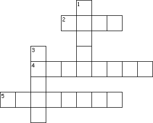

This week's lessons: Acts 4:5-12, Psalm 23, 1 John 3:16-24, John 10:11-18
This
week's lessons: Acts
4:5-12, Psalm
23, 1
John 3:16-24, John
10:11-18
Middle-School Pew-work
|
11I am the good shepherd: the good shepherd giveth his life for the sheep. 12But he that is an hireling, and not the shepherd, whose own the sheep are not, seeth the wolf coming, and leaveth the sheep, and fleeth: and the wolf catcheth them, and scattereth the sheep. 13The hireling fleeth, because he is an hireling, and careth not for the sheep. |
14I am the good shepherd, and know my sheep, and am known of mine. 15As the Father knoweth me, even so know I the Father: and I lay down my life for the sheep. 16And other sheep I have, which are not of this fold: them also I must bring, and they shall hear my voice; and there shall be one fold, and one shepherd. |
17Therefore doth my Father love me, because I lay down my life, that I might take it again. 18No man taketh it from me, but I lay it down of myself. I have power to lay it down, and I have power to take it again. This commandment have I received of my Father. |
For sheep to thrive they need a good shepherd. What do you need the Good Shepherd to do for you?
_________________________________________________________________________________________________________________________________________________________________________________________________________________________________________________________________________________________________________________________________________________________________________________________________________________________________________________________________________________________________________________________________________________________________________________________________________________________________
|
|
Across 2. where the sheep live 4. One who runs 5. who lays down his life for his sheep Down 1. what the sheep recognize 3. who know their master's voice |
 |
Next Week: Acts 8:26-40, Psalm 22:25-31, 1 John 4:7-21, John 15:1-8